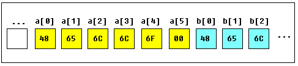

TEXT SCRAMBLING in TRIAL VERSION OUTPUT! In evaluation mode, Help+Manual will scramble individual characters in random words in your published output files. This is a limitation of the free trial version. This help system was created with an evaluation copy of Help+Manual.
Уроки Ассемблера 8086 для начинающих (Часть 3)
Переменные
Перевод: Поляков А.В. http://www.avprog.narod.ru
Переменные хранятся в памяти по определенным адресам. Программисту проще иметь дело именами переменных, чем с адресами в памяти. Например, переменная с именем "var1" будет более понятна в коде программы, чем адрес 5A73:235B, особенно когда количество переменных велико.
Наш компилятор поддерживает два типа переменных: BYTE и WORD.
Как вы уже знаете из части 2 этих уроков, команда MOV используется для копирования значения из источника в приемник.
Давайте посмотрим другой пример с командой MOV:
Скопируйте вышеприведенный код в редактор кода Emu8086 и нажмите клавишу F5, чтобы откомпилировать и загрузить этот код в эмулятор. Вы увидите примерно такую картину:
На рисунке вы можете заметить команды, похожие на те, что используются в нашем примере. Только переменные заменены фактическими местоположениями в памяти. Когда компилятор создает машинный код, он автоматически заменяет имена всех переменных их смещениями. По умолчанию сегмент загружен в регистр DS (в COM-файлах значение регистра DS устанавливается таким же, что и значение в регистре CS - сегменте кода).
В таблице памяти (memory) первый столбец - это смещение, второй столбец - это шестнадцатиричное значение, третий столбец - десятичное значение, а последний столбец - это символ ASCII, соответствующий данному числу.
Компилятор не чувствителен к регистру, поэтому "VAR1" и "var1" - это одно и то же.
Смещение переменной VAR1 - это 0108h, а полный адрес - 0B56:0108.
Смещение переменной var2 - это 0109h, а полный адрес - 0B56:0109. Эта переменная имеет тип WORD, поэтому занимает 2 БАЙТА. Принято младший байт записывать по меньшему адресу, поэтому 34h размещается перед 12h.
Вы можете увидеть некоторые другие инструкции после команды RET. Это случается потому, что дизассемблер не знает, где начинаются данные. Он только обрабатывает значения в памяти и понимает их как имеющие силу инструкции процессора 8086 (мы изучим их позже).
Вы можете даже написать программу, используя только директиву DB:
Скопируйте вышеприведенный код в редактор кода Emu8086 и нажмите клавишу F5, чтобы откомпилировать и загрузить этот код в эмулятор. Вы получите тот же самый дизассемблированный код и тот же самый результат работы программы!
Как вы можете догадаться, компилятор только преобразует исходный код программы в набор байтов. Этот набор байтов называется машинным кодом. Процессор обрабатывает машинный код и выполняет его.
ORG 100h - это директива компилятора (она указывает компилятору как обрабатывать исходный код). Эта директива очень важна при работе с переменными. Она указывает компилятору, какой исполняемый файл будет загружаться в смещение (offset) 100h (256 байтов), так что компилятор должен вычислить правильный адрес для всех переменных, когда он размещает имена переменных с их смещениями. Директивы никогда не преобразуются в какой-либо реальный машинный код. Почему исполняемый файл загружается по смещению 100h? Операционная система хранит некоторые данные о программе в первых 256 байтах, начиная от CS (сегмента кода), такие как параметры командной строки и т.д. Все это справедливо только для COM-файлов, файлы EXE загружаются по смещению 0000, и обычно используют специальный сегмент для переменных. Может быть, мы поговорим об EXE-файлах позже.
Массивы
Массив можно рассматривать как цепочку переменных. Текстовая строка - это пример массива байтов, в котором каждый символ представлен значением ASCII-кода (0..255).
Вот некоторые примеры определения массивов:
a DB 48h, 65h, 6Ch, 6Ch, 6Fh, 00h b DB 'Hello', 0
b - это точная копия массива a - когда компилятор видит строку, заключенную в кавычки, он автоматически преобразует ее в набор байтов. Эта таблица показывает участок памяти, где эти массивы объявлены:

Вы можете получить значение любого элемента массива, используя квадратные скобки, например:
MOV AL, a[3]
Вы можете также использовать какой-либо из регистров BX, SI, DI, BP, например:
MOV SI, 3 MOV AL, a[SI]
Если необходимо объявить большой массив, вы можете использовать оператор DUP.
Синтаксис для DUP:
количество DUP ( значение(я) )
количество - количество дубликатов (любая константа). значение - выражение, которое будет дублироваться оператором DUP.
например:
c DB 5 DUP(9)
а это альтернативный способ объявления:
c DB 9, 9, 9, 9, 9
еще один пример:
d DB 5 DUP(1, 2)
а это альтернативный способ объявления:
d DB 1, 2, 1, 2, 1, 2, 1, 2, 1, 2
Конечно, вы можете использовать DW вместо DB, если требуется хранить числа более 255, или менее -128. DW не может быть использован для объявления строк!
Оператор DUP не может содержать более 1020 знаков в качестве операнда! (в последнем примере 13 знаков). Если вам необходимо объявить очень большой массив, разделите его на две строки (вы получите один большой массив в памяти).
Получение адреса переменной
Есть такая команда LEA (Load Effective Address) и альтернативный оператор OFFSET. Как OFFSET так и LEA могут быть использованы для получения смещения адреса переменной.
LEA более мощная, т.к. она также позволяет вам получить адрес индексированных переменных. Получение адреса переменной может быть очень полезно в различных ситуациях, например, если вам необходимо поместить параметр в процедуру.
Напоминание: Чтобы указать компилятору тип данных, вы должны использовать следующие префиксы:
BYTE PTR - для байта. WORD PTR - для слова (два байта).
Например: BYTE PTR [BX] ; доступ к байту. Emu8086 поддерживает короткие префиксы:
b. - для BYTE PTR w. - для WORD PTR
иногда компилятор может вычислить тип данных автоматически, но вы не можете и не должны полагаться на это, если один из операндов является непосредственным значением.
Здесь первый пример:
Здесь другой пример, который использует OFFSET вместо LEA:
Оба примера функционально идентичны.
Эти строки:
LEA BX, VAR1 MOV BX, OFFSET VAR1
даже компилируются в одинаковый машинный код: MOV BX, num num - это 16-битовое значение смещения переменной.
Пожалуйста учтите, что только эти регистры могут использоваться внутри квадратных скобок (как указатели памяти):
BX, SI, DI, BP!
(См. предыдущую часть уроков).
Константы
Константы подобны переменным, но они существуют до того, как ваша программа откомпилирована (ассемблирована). После определения константы ее значение не может быть изменено. Для определения константы используется директива EQU:
имя EQU < любое выражение >
Например:
Этот пример функционально идентичен коду:
Вы можете наблюдать переменные во время выполнения программы, если выберите пункт "Variables" в меню "View" эмулятора.
Чтобы наблюдать массивы, вы должны щелкнуть по переменной и установить свойство Elements - размер массива. В Ассемблере нет строгих типов данных, поэтому любые переменные могут быть представлены как массив.
Переменная может быть просмотрена в любой числовой системе: •HEX - шестнадцатиричная (основа 16). •BIN - двоичная (основа 2). •OCT - восмеричная (основа 8). •SIGNED - десятичная со знаком (основа 10). •UNSIGNED - десятичная без знака (основа 10). •CHAR - коды ASCII-символов (всего 256 символов, некоторые символы невидимы).
Вы можете редактировать переменные, когда ваша программа выполняется, просто щелкнув дважды по переменной или выбрать ее и щелкнуть кнопку Edit.
Можно вводить числа в любой системе, шестнадцатиричные цифры должны иметь суффикс "h", двоичные - суффикс "b", восмеричные - суффикс "o", десятичные цифры не требуют суффикса. Строка может быть введена следующим способом:
'hello world', 0
(эта строка заканчивается нулем).
Массив может быть введен следующим способом:
1, 2, 3, 4, 5
(массив может быть массивом байтов или слов, это зависит от того, выбран ли BYTE или WORD для введенной переменной).
Выражения преобразуются автоматически, например:
если введено это выражение: 5 + 2
оно будет преобразовано в 7 и т.п...
<<< Предыдущая часть <<< >>> Следующая часть >>>
|